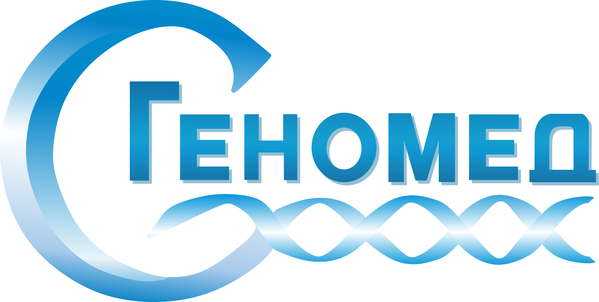
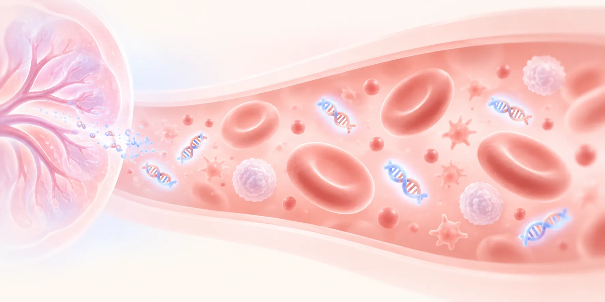
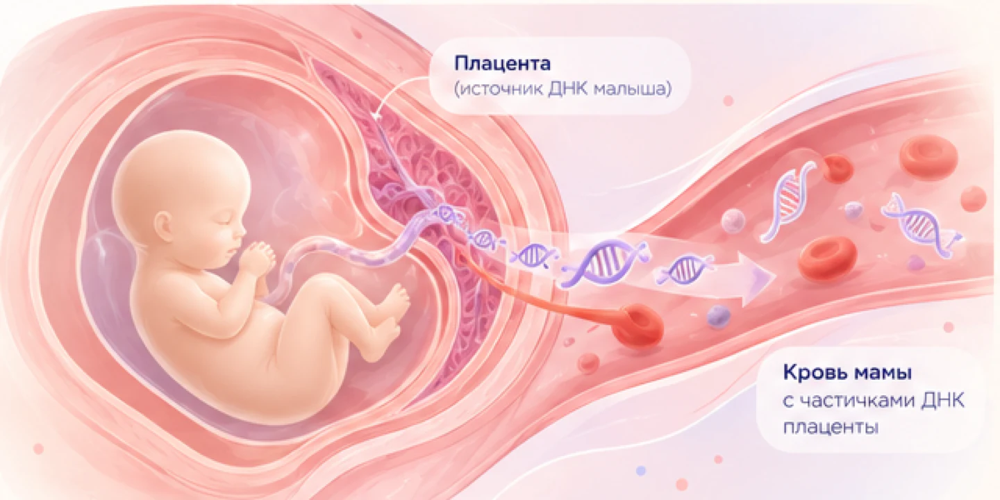
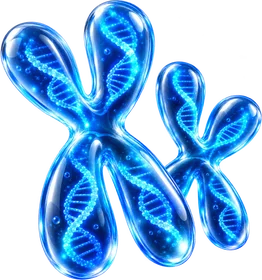
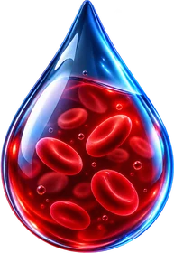
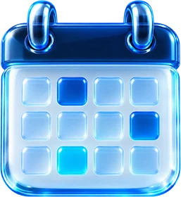

Код 1110
НИПТ Т21
Базовый скрининг на синдром Дауна
1 синдром
- Трисомия 21 · синдром Дауна
- Определение пола плода
- Выполняется при двойне и после редукции одного эмбриона
16 000 ₽
8 календарных дней

Диагностика генетических заболеваний быстро и точно
Анализ крови мамы для точной оценки риска хромосомных аномалий у малыша
Скрининг по ДНК плода в крови мамы: оценивает вероятность синдрома Дауна и других частых хромосомных аномалий. Рекомендуют всем беременным, особенно после 35 лет, после ЭКО и при повышенном риске по биохимическому скринингу. Сдают с 10 полных недель, заключение врача-генетика — через 8 дней.


С 10-й недели беременности их доля — плодная фракция — обычно достигает 4 % и больше. Этого достаточно для анализа.
Как для обычного анализа — без прокола и риска для беременности. Из плазмы выделяют внеклеточную ДНК.
Программа определяет, с какой хромосомы пришёл каждый фрагмент.
Для каждой хромосомы считается, сколько фрагментов пришлось на неё, и это число сравнивается с ожидаемым.
Если фрагментов 21-й хромосомы больше ожидаемого, это признак синдрома Дауна. Врач-генетик оценивает риск; высокий риск подтверждают диагностическим исследованием.
Для исследования достаточно взять кровь из вены — без инвазивной процедуры. Заключение врач-генетик разбирает вместе с вами.

Трисомии 21, 18, 13 и половые хромосомы

20 мл из вены, без подготовки

Раньше биохимического скрининга
С разбором результата, входит в стоимость
Без амниоцентеза и биопсии ворсин хориона
НИПТ и комбинированный скрининг первого триместра (УЗИ и анализ крови) решают разные задачи. НИПТ отличается более высокой выявляемостью частых трисомий и меньшей частотой ложноположительных результатов — то есть реже направляет женщину на инвазивную процедуру без необходимости.
Оба метода безопасны для беременности. НИПТ можно пройти раньше — с 10 полных недель, скрининг первого триместра проводят на 11–13-й неделе.
1000 беременных, у плода нет хромосомных аномалий. Ложный «высокий риск» и направление на инвазивную процедуру без необходимости:
| НИПТ | Скрининг I триместраСкрининг I трим. | |
|---|---|---|
| Выявляемость трисомии 21 | 99,7 % | ≈ 85 % |
| Выявляемость трисомии 18 | 97,9 % | ≈ 91 % |
| Ложноположительные результаты | 0,04 % | ≈ 5 % |
НИПТ — метаанализ Gil и соавт., Ultrasound Obstet Gynecol, 2017; скрининг I триместра — Wapner и соавт., N Engl J Med, 2003.
Кровь для всех панелей берут одинаково — 20 мл из вены. Панели различаются объёмом анализа, сроком и стоимостью.
Базовый скрининг на синдром Дауна
Три основные трисомии и пол плода
Трисомии и анеуплоидии половых хромосом
Микроделеции и носительство у будущей мамы
Все хромосомы плода и 31 синдром
Результаты пригодятся и при планировании следующих беременностей, и чтобы решить, нужно ли обследовать партнёра.
Сомневаетесь между двумя панелями?Врач-генетик разберёт вашу ситуацию и подскажет объём исследования — бесплатно, до оплаты.
Стандартная панель охватывает трисомии 21, 18 и 13, анеуплоидии половых хромосом и определение пола плода. Расширенная добавляет к этому скрининг шести микроделеционных синдромов и скрининг носительства рецессивных заболеваний у будущей мамы, а при высоком риске — бесплатную подтверждающую диагностику. Срок при этом считается в рабочих днях, а не в календарных.
Высокий риск по НИПТ — не диагноз, а основание для подтверждающего исследования: амниоцентеза или биопсии ворсин хориона с последующим хромосомным анализом. Врач-генетик разбирает заключение вместе с вами и объясняет, какие шаги возможны. В расширенной и экспертной панелях хромосомный микроматричный анализ при высоком риске выполняется бесплатно.
Да, исследование выполняется и при беременности, наступившей после экстракорпорального оплодотворения, в том числе с донорской яйцеклеткой. Сообщите об этом при записи — генетик учтёт это при выборе панели и интерпретации результата.
В лаборатории Геномед также доступны импортные панели: Panorama (Natera, США) — от 32 000 ₽, и Vistara — скрининг на 25 моногенных синдромов. Это отдельные тесты, не входящие в линейку из пяти панелей выше. Подберём вариант на консультации.
Состав каждой панели по синдромам и итоговое число синдромов.
| Что входит в исследование | Т2116 000 ₽ | Базовая19 000 ₽ | Стандартная23 000 ₽ | Расширенная34 000 ₽ | Экспертная40 000 ₽ |
|---|---|---|---|---|---|
| Хромосомных синдромов в панели | 1 | 3 | 7 | 13 | 38+ все хромосомы |
| Аутосомные трисомии | |||||
| Синдром Дауна · трисомия 21 | ✓ | ✓ | ✓ | ✓ | ✓ |
| Синдром Эдвардса · трисомия 18 | — | ✓ | ✓ | ✓ | ✓ |
| Синдром Патау · трисомия 13 | — | ✓ | ✓ | ✓ | ✓ |
| Половые хромосомы | |||||
| Синдром Шерешевского—Тернера · моносомия X | — | — | ✓ | ✓ | ✓ |
| Синдром Клайнфельтера · 47,XXY | — | — | ✓ | ✓ | ✓ |
| Трисомия X · 47,XXX | — | — | ✓ | ✓ | ✓ |
| Синдром Якобс · 47,XYY | — | — | ✓ | ✓ | ✓ |
| Определение пола плода | ✓ | ✓ | ✓ | ✓ | ✓ |
| Остальные хромосомы плода | |||||
| Анеуплоидии прочих аутосом · 1—12, 14—17, 19, 20, 22 | — | — | — | — | ✓ |
| Крупные перестройки · CNV более 5 млн п.н. | — | — | — | — | ✓ |
| Микроделеционные синдромы | — | — | — | 6 | 31 |
| Синдром Ди Джорджи · делеция 22q11.2 | — | — | — | ✓ | ✓ |
| Синдром Прадера—Вилли · 15q11.2-q13 | — | — | — | ✓ | ✓ |
| Синдром Ангельмана · 15q11.2-q13 | — | — | — | ✓ | ✓ |
| Синдром кошачьего крика · 5p15.2 | — | — | — | ✓ | ✓ |
| Синдром Вольфа—Хиршхорна · 4p16.3 | — | — | — | ✓ | ✓ |
| Синдром делеции 1p36 | — | — | — | ✓ | ✓ |
| Синдром Миллера—Дикера · 17p13.3 | — | — | — | — | ✓ |
| Синдром Вильямса · 7q11.23 | — | — | — | — | ✓ |
| Синдром Смита—Магениса · 17p11.2 | — | — | — | — | ✓ |
| Синдром Клифстра · 9q34.3 | — | — | — | — | ✓ |
| Сотос-подобный синдром · 5q35 | — | — | — | — | ✓ |
| Синдром Якобсена · 11q24-q25 | — | — | — | — | ✓ |
| Синдром Алажилля · 20p12 | — | — | — | — | ✓ |
| Ещё 18 клинически значимых синдромов | — | — | — | — | ✓ |
| Репродуктивные риски семьи | |||||
| Носительство рецессивных заболеваний у будущей мамы | — | — | — | 18 | 18 |
| Условия и сервис | |||||
| Двойня и редукция одного эмбриона | ✓ | ✓ | на консультации | на консультации | на консультации |
| Подтверждающий ХМА при высоком риске | — | — | — | бесплатно | бесплатно |
| Заключение врача-генетика с разбором | ✓ | ✓ | ✓ | ✓ | ✓ |
| Срок выполнения | 8 кал. дн. | 8 кал. дн. | 8 кал. дн. | 8 раб. дн. | 8 раб. дн. |
| Стоимость | 16 000 ₽ | 19 000 ₽ | 23 000 ₽ | 34 000 ₽ | 40 000 ₽ |
| Заказать | Заказать | Заказать | Заказать | Заказать | |
«Хромосомных синдромов в панели» — сумма отдельных нозологий: 3 трисомии + 4 анеуплоидии половых хромосом + микроделеционные синдромы. Носительство у мамы считается отдельно и в это число не входит. Состав панелей — по разделу НИПТ на genomed.ru, цены, коды и сроки — по прайсу.
Ниже — 13 синдромов из 31. Полный перечень можно уточнить у врача-генетика.
Скрининг носительства патогенных вариантов у будущей мамы. Важен, если носителями вариантов в одном и том же гене окажутся оба родителя: тогда вероятность заболевания у ребёнка составляет 25 %. Входит в расширенную и экспертную панели.
Шесть коротких вопросов — и покажем панель под вашу ситуацию. Контакты вводить не нужно.
НИПТ сдают с 10 полных недель.
От этого зависит, какие панели можно сделать.
С возрастом вероятность хромосомных аномалий меняется.
Можно выбрать несколько.
Носители обычно здоровы и не знают о носительстве.
Последний вопрос.
Специальная подготовка не требуется, сдавать кровь можно не натощак.
Запись онлайн или в мессенджере. Врач-генетик — в центре или онлайн — помогает выбрать панель под срок беременности и анамнез.
20 мл венозной крови с 10 полных недель беременности, как при обычном анализе. Перед этим подписывается договор информированного согласия.
В лаборатории из плазмы выделяют внеклеточную ДНК и прочитывают её на секвенаторе. Каждый этап проходит контроль качества.
Через 8 дней результат приходит на электронную почту, указанную в договоре. При необходимости — разбор заключения с врачом.
Т21, базовая и стандартная панели — 8 календарных дней, расширенная и экспертная — 8 рабочих.
Кровь берёт персонал лаборатории. Здесь же можно задать вопросы врачу перед исследованием.
Партнёрская сеть медицинских центров позволяет сдать кровь рядом с домом — ехать в Москву не нужно.
Удобный вариант при токсикозе, угрозе прерывания или ограниченной мобильности. Медсестра приезжает с набором для взятия крови.
Готовы записаться?Подскажем ближайший медицинский офис и удобное время. Работаем по всей России, тест можно заказать и в другую страну.
Записаться →Заключение приходит на электронную почту через 8 дней. Врач-генетик разбирает его вместе с вами и объясняет, что делать дальше.
Вероятность исследованных хромосомных аномалий у плода низкая.
Беременность ведут как обычно: наблюдение у акушера-гинеколога и плановые УЗИ.
Вероятность аномалии повышена, но это ещё не диагноз — результат нужно подтвердить.
Врач-генетик направит на амниоцентез или биопсию ворсин хориона. В расширенной и экспертной панелях хромосомный микроматричный анализ при высоком риске — бесплатно.
В крови мало ДНК плода: плодная фракция ниже 4 %, надёжно оценить риск нельзя.
Лаборатория бесплатно повторит анализ по новому образцу крови на более позднем сроке, генетик обсудит дальнейшую тактику.
Более 100 000 исследований выполнено с 2013 года. Сдать кровь можно в медицинском офисе, у партнёра в вашем городе или дома — с выездом медсестры.
Спросите врача-генетика — консультация перед исследованием бесплатна.
Задать вопросДа. Для исследования берут венозную кровь у матери — процедура ничем не отличается от обычного анализа крови. Фрагменты ДНК плаценты сами попадают в кровь матери, поэтому прокол плодных оболочек, как при амниоцентезе или биопсии ворсин хориона, не нужен и риска для беременности нет.
С 10 полных недель беременности: к этому сроку доля ДНК плода в материнской крови обычно достигает необходимых 4 % и выше. Верхней границы срока практически нет. Плодная фракция определяется в процессе исследования — если она оказалась ниже 4 %, кровь потребуется сдать повторно на более позднем сроке.
Нет. НИПТ — скрининговое исследование: оно оценивает вероятность хромосомной аномалии, но не устанавливает диагноз. При высоком риске результат подтверждают инвазивной диагностикой с последующим хромосомным анализом. В расширенной и экспертной панелях Геномед такое подтверждение выполняется бесплатно.
Это вероятность того, что при низком риске по результату хромосомная аномалия у плода всё же есть. Для НИПТ она очень мала: надёжность низкого результата (NPV) превышает 99,9 %, но формально остаточный риск не равен нулю.
Специальная подготовка не требуется. Сдавать кровь можно не натощак, диета и отмена препаратов не нужны. Для исследования берут 20 мл венозной крови.
Через 8 дней после взятия крови заключение врача-генетика приходит на электронную почту, указанную в договоре. Для панелей Т21, базовой и стандартной срок считается в календарных днях, для расширенной и экспертной — в рабочих. Разбор заключения с врачом-генетиком входит в стоимость.
При двуплодной беременности и после редукции одного эмбриона выполняются панели Т21 и базовая. Панели с анеуплоидиями половых хромосом при двойне не применяются: ДНК каждого плода в крови матери разделить нельзя. При тройне и большем числе плодов исследование не проводится.
Да, определение пола плода входит во все пять панелей. Если вы не хотите знать пол до родов, скажите об этом при записи — врач не назовёт его при разборе заключения.
Доля ДНК плода определяется уже в ходе исследования. Если она ниже 4 %, достоверный результат получить нельзя — лаборатория бесплатно выполняет анализ нового образца крови на большем сроке. Низкая плодная фракция сама по себе считается поводом обсудить с генетиком дальнейшую тактику.
Часть ограничений связана с биологией метода: в этих ситуациях ДНК в крови мамы не отражает хромосомный набор плода или её недостаточно для надёжного анализа.
ДНК плода в крови мамы ещё слишком мало для анализа.
ДНК разных плодов в крови матери разделить невозможно. При двойне выполняются панели Т21 и базовая.
Опухолевая ДНК попадает в кровоток и искажает подсчёт хромосом.
В крови есть чужая ДНК донора, поэтому корректно интерпретировать результат нельзя.
Результат не выдаётся, повторное взятие крови на большем сроке — бесплатно.
ДНК остановившегося в развитии эмбриона ещё около шести недель определяется в крови и может дать ложноположительный результат.
Доля ДНК плода в крови снижается, и её может не хватить для надёжного результата.
Примерно у 1 из 250 женщин есть трисомия X или мозаичная моносомия X. Тогда риск анеуплоидий половых хромосом у плода оценить нельзя.
Если изменённый набор хромосом есть только в части клеток плаценты или мамы, результат может оказаться ложным.
Нужен не скрининг, а диагностика плода — например, хромосомный микроматричный анализ.
Чего НИПТ не выявляет. Транслокационную и мозаичную формы синдромов Дауна, Эдвардса и Патау.
Когда лучше сразу диагностика. Если по УЗИ уже найдены маркеры или пороки развития плода и нет противопоказаний, врач рекомендует не НИПТ, а амниоцентез или биопсию ворсин хориона.
Все ограничения врач-генетик разбирает индивидуально на консультации перед исследованием.
Напишите в клиентский сервис — поможем выбрать панель, подскажем ближайший медицинский офис и ответим на вопросы. Консультация перед исследованием бесплатна.
Клиентский сервис 24/7 · горячая линия 8 (495) 660-83-77
Т21 — базовый скрининг на синдром Дауна. До 40 000 ₽ за экспертную панель с анализом всех хромосом плода.
Подобрать НИПТ → Сравнить панелиПоможем выбрать панель, подскажем ближайший медицинский офис и ответим на вопросы.
или по телефону 8 (495) 660-83-77
Превью: на сайте здесь открывается штатная форма заявки.